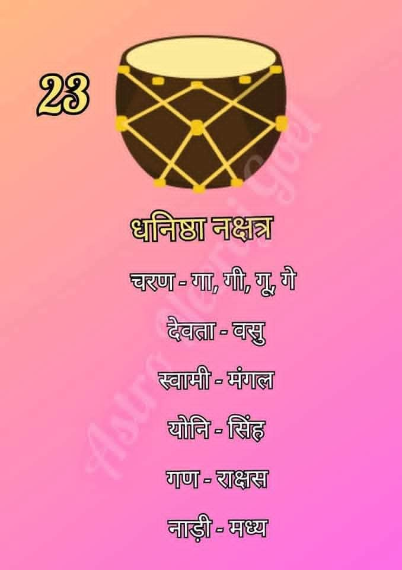

धनिष्ठा नक्षत्र (Dhanishta Nakshatra)
धनिष्ठा नक्षत्र आकाश मंडल का तेईसवां नक्षत्र है। इसे 'अष्ट वसु' का नक्षत्र माना जाता है, जो धन, समृद्धि, ख्याति और संगीत का प्रतीक है। इसका प्रतीक 'मृदंग' (ढोल) है।

सामान्य स्वभाव:
धनिष्ठा नक्षत्र में जन्मे जातक अत्यंत महत्वाकांक्षी, उदार और ऊर्जावान होते हैं। इनमें नेतृत्व करने की अद्भुत क्षमता होती है और ये सामाजिक प्रतिष्ठा प्राप्त करने के लिए निरंतर प्रयासशील रहते हैं।
धनिष्ठा नक्षत्र की मुख्य विशेषताएँ
- महत्वाकांक्षा: ये ऊँचे लक्ष्य निर्धारित करने और उन्हें प्राप्त करने में विश्वास रखते हैं।
- संगीत और कला प्रेमी: कला, नृत्य और संगीत के प्रति इनका विशेष लगाव होता है।
- उदारता: ये दूसरों की मदद करने के लिए हमेशा तैयार रहते हैं और स्वभाव से दानी होते हैं।
- धन संचय की योग्यता: आर्थिक मामलों में ये बहुत चतुर होते हैं और धन संचय करने में सफल रहते हैं।
- निडर व्यक्तित्व: चुनौतियों का सामना करना इनके लिए सहज होता है।
शिक्षा एवं करियर
धनिष्ठा नक्षत्र के जातक अपनी प्रबंधकीय और कलात्मक क्षमताओं के कारण निम्नलिखित क्षेत्रों में बहुत सफल होते हैं:
- संगीत और प्रदर्शन कला (Music & Performing Arts)
- रियल एस्टेट और संपत्ति प्रबंधन (Real Estate & Property Management)
- इंजीनियरिंग और तकनीकी क्षेत्र (Engineering & Technology)
- वित्त और बैंकिंग (Finance & Banking)
- खेल और एथलेटिक्स (Sports & Athletics)